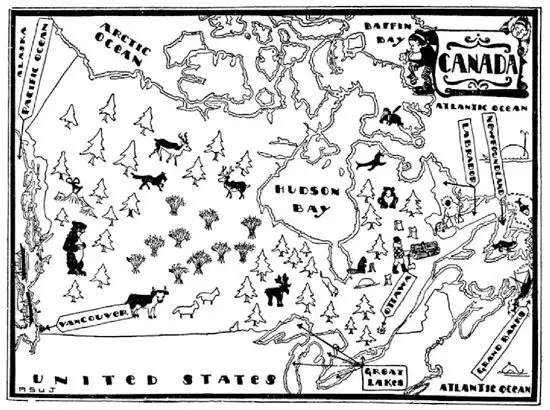

17
Next-door Neighbors
隔壁邻居

THERE is a saying that “Good fences make good neighbors,” but that depends on the neighbors. North of the United States is a country bigger than the United States called Canada. It stretches across America from sea to sea, from the Atlantic to the Pacific, and there would have to be a fence 3,000 miles long if there were a fence, but there is none—nothing but an imaginary line. An imaginary line is a line on the map but not on the ground. On this imaginary line the two countries set up a stone on which they said something like this, “Canada and the United States agree never to fight”; that’s all—a gentlemen’s agreement. It is called the “Peace Stone.”
Boys often say “findings is keepings.” The French people found Canada, but England thought she had a better right to it, so she fought for it and took it away from the French. That was a long time ago, but there are a great many French still in Canada, and in the city of Quebec more people speak French than English.
I once had a Newfoundland dog. He was woolly and big and ate as much as a man. Newfoundland dogs came from an island on the At-lantic side of Canada which an Englishman found, and so he called it New-found-land. Newfoundland is now a part of Canada.
Just off the coast of Newfoundland is a shallow part of the sea called the Grand Banks. But the Banks are under the water. It is a great fishing ground, but men go fishing there, not for pleasure, but for business. Thousands of small boats go off and stay off and do not return until they have caught all the fish they can carry. It is often very foggy on the Grand Banks, and sometimes big ocean steamships coming over from across the Atlantic Ocean cannot see the small fishing boats and run into them and sink them with all on board.
Canada is big in size but small in number of people. There are not as many people in all of Canada as there are in the State of New York. Most of the people in Canada live as close along the edge of the United States as they can, because it gets very cold in winter farther north than that. Close to the United States people do pretty nearly the same things and raise the same things as people south of the border in the United States. For instance, Canada raises more wheat than any other country in the World except the United States.
One of the biggest concerns in Canada is a railroad company called the Canadian Pacific. The railroad runs all the way across Canada from the Atlantic Ocean to Vancouver on the west coast of Canada. But it doesn’t stop at the Oceans. It has big steamers that cross the Atlantic Ocean and it has big steamers that cross the Pacific Ocean. The Canadian Pacific owns all the hotels along the railroad, too. Along one part of the railroad there is very wonderful scenery—beautiful mountains and lakes. Lake Louise, in the Rocky Mountains, is so beautiful that many people go there on their vacations or on their wedding journeys.
No woman likes a wild animal such as a fox or wolf close to her, but as soon as the animals are dead she loves their skins close to her and will pay high prices to get them. There is a big bay in Canada, almost as big as the Gulf of Mexico; it is called Hudson Bay and named after the man who discovered it. He is the same man who discovered the Hudson River, but Hudson Bay and Hudson River have no other connection. Hudson Bay is filled with ice all winter long, and all around Hudson Bay the winters are so cold that men do not live there unless they have to. The chief reason some men do live there is to hunt animals. The animals in that cold country can’t buy overcoats, so they grow overcoats on themselves—fur overcoats, which are the very best kind of overcoats. Hunters trap and kill wolves, foxes, and other animals, skin them of their overcoats, and sell them to ladies who can pay big prices for them. This company of people who trap animals and sell furs is called the Hudson’s Bay Company.
As we have States, Canada has provinces, but there are only ten provinces in Canada. The chief one is called Ontario, after Lake Ontario. Ontario, however, borders all the other Great Lakes too, except Michigan. In Ontario is the capital of Canada. It is called Ottawa. England sends a man across the ocean to Canada, called the Governor-General, but the people in Canada send men to Ottawa to make their own laws.

As you go north in Canada the country gets colder and colder, till at last it gets so cold that it is too cold even for trees to grow. The trees that grow farthest north hold their leaves and stay green the year round like the pine and spruce. They are called “evergreens.” The wood of evergreens is soft. The trees that cannot grow as far north as evergreens drop their leaves in the winter, like the oak and maple. Their wood is usually hard. The hard- wood trees are used chiefly to make furniture, but the soft-wood trees are ground up to make paper.
The paper on which this book and almost every other book is printed and all the paper used for newspapers is made from wood. A great city newspaper will use up many acres of trees in a single day. It takes as many trees as grow in a space the size of a city block to feed a single paper a single day. So you see how fast trees are being cut down in Canada to keep the presses in the United States going. Day after day miles upon miles of trees are cut down, ground into pulp, made into paper, and shipped to us in large rolls, that we may have the news—only to be burned up the day after. As people are fed wheat, and animals corn, printing presses must be fed trees for their daily meal, year in and year out, without ceasing.
One of the first geography lessons I ever had was about Eskimos, who lived in snow houses and fished through a hole in the ice. One of the homes of the Eskimos is Labrador on the northeastern corner of Canada. The Eskimos are related to the Indians, and both are very distantly related to the Chinese, but I’ll tell you more about them later.
【中文阅读】
有句谚语说“篱笆筑得牢，邻居处得好”，但那也要看是什么样的邻居。美国北面是一个比美国更大的国家，叫做加拿大。加拿大和美国之间的边界线从大西洋沿岸一直延伸到太平洋沿岸，如果竖起一道篱笆的话，这道篱笆要长达3000英里，但实际上并没有篱笆——只有一条想象中的线。想象中的线是地图上的一条线，但不是地面上的线。在这条想象中的线上，两个国家立起一块石头，上面写着像这样的话：“加拿大和美国约定永不交战”；就是这些——一个“君子协定”。这块石头叫做“和平石”。
男孩们常说“谁找到，就归谁”。法国人发现了加拿大，但是英国认为自己更有权获得加拿大，因此与法国交战并从法国手里夺走了加拿大。那是很久以前的事了，但是现在加拿大仍然有很多法国人，在魁北克市说法语的人比说英语的人多。
我曾经有一条纽芬兰狗。它毛茸茸的，体形很大，食量很大，和人差不多。纽芬兰狗来自于加拿大大西洋一侧的一个岛。这座岛是一个英国人发现的，所以他把它叫做纽芬兰岛 [1] 。纽芬兰岛现在是加拿大的一部分。
纽芬兰岛沿海有一片很浅的海域，叫做“大浅滩”。但是所谓的“海滩”是位于水下的。这里是一个很大的渔场，但人们去那捕鱼并不是为了消遣，而是为了做生意。成千上万的小船驶离海岸，停留在海上，直到捕够了满满一船的鱼才会返回。大浅滩上经常有大雾，有时从大西洋对岸驶来的大型远洋轮船看不到小渔船，就会撞到它们，于是小船连鱼带人全部沉入海底。
加拿大是个地广人稀的国家。整个国家的人口还没有纽约州的人多。加拿大的大部分人口都住在离美国边界尽可能近的地方，因为再往北冬天就非常寒冷。由于靠近美国，那里的人和边界线以南的美国人几乎做同样的事、种植同样的东西。比如说，加拿大是除美国以外世界上种植小麦最多的国家。
加拿大最大的公司之一是一个叫做加拿大太平洋的铁路公司。铁路从大西洋一直延伸到加拿大西部海岸的温哥华，跨越整个加拿大。但它在海上的交通并没有停止。太平洋和大西洋上，公司都有大型轮船横穿而过。加拿大太平洋公司还拥有铁路沿线的所有旅馆。其中一段铁路沿线的风景非常优美——有美丽的高山和湖泊。落基山脉的路易斯湖非常美丽，很多人度假或新婚度蜜月都选择到那儿去。
没有女人会喜欢狐狸或狼这样的野生动物靠近自己，但这些动物一死，她们就巴不得要它们的毛皮贴近自己，不惜以高价买下来。加拿大有个大海湾，几乎和墨西哥湾一样大；叫做“哈得孙湾”，是以发现海湾的人的名字而命名的。他也是发现了哈得孙河的同一人，但除此之外，哈得孙湾和哈得孙河没有别的任何联系。哈得孙湾整个冬天全部都被冰封住了，哈得孙湾周边地区冬天非常寒冷，人们都尽量不居住在那里。有些人住在那儿主要是为了捕猎动物。在那个寒冷的地方，动物们无法买到大衣，于是它们在自己身上长出了厚厚的皮毛——真正的毛皮大衣，最好的保暖大衣。猎人们设陷阱捕杀狼、狐狸和其他的动物，剥掉它们的大衣，然后卖给那些付得起高价的女士们。这伙捕猎动物出售毛皮的人来自哈得孙湾公司。
就像美国有州一样，加拿大有省，但加拿大只有十个省。最重要的省是安大略省，是以安大略湖而命名的。然而，除密歇根湖外安大略省也和所有其他几大湖接壤。加拿大的首都就位于安大略省境内，叫渥太华。英国派一个人渡过大洋来到加拿大，任总督，但是加拿大人民选派代表到渥太华制定他们自己的法律。
在加拿大，越往北走，天气就越来越寒冷，最北端的地区气候过于寒冷，连树木都不能生长。有些生长在最北部的树木一年到头树叶不落，而且四季常 青，比如松树和云杉。这些树叫“常青树”。常青树的木材质地是软的。那些不能像常青树那样生长在遥远北部的树木在冬天树叶掉落，比如橡树和枫树。它们的木材质地通常是硬的。硬材树主要用来做家具，但软材树则被碾碎用来造纸。
印刷这本书和几乎所有其他书籍用的纸以及所有报纸用的纸都是由木材造的。一份大城市的报纸一天的发行量就要用掉几英亩的树木。一天发行一份报纸就要用掉一个城市街区那么大一块地方上生长的树木。这样你就明白了加拿大的树木正在以多快的速度被砍伐掉来维持美国印刷机的运转。日复一日，数英里又数英里的树木被砍倒，先磨成木浆，后做成纸张，然后成卷成卷地运送到我们这里，这样我们就可以读到报上的新闻——第二天这些报纸就被烧掉。正如人以小麦为食、动物以玉米为食，印刷机必须以树木作为它们每日的“食物”，年复一年，从不停止。
我学到的最早的地理课之一是关于爱斯基摩人的，他们住在雪做的房子里，在冰上凿洞捕鱼。加拿大东北角的拉布拉多地区是爱斯基摩人的定居地之一。爱斯基摩人和印第安人有亲属关系，而这两者也和中国人有着一定程度的亲属关系，但是我会在后面告诉你更多关于他们的故事。